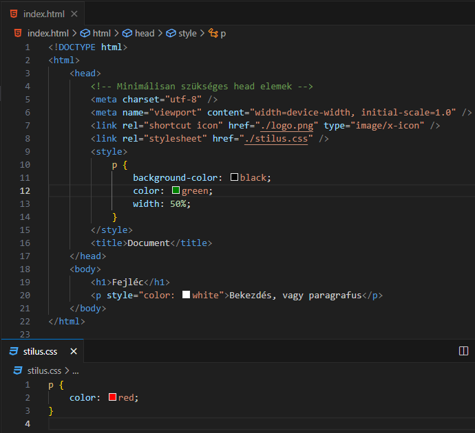
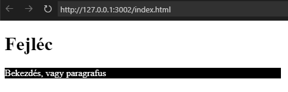
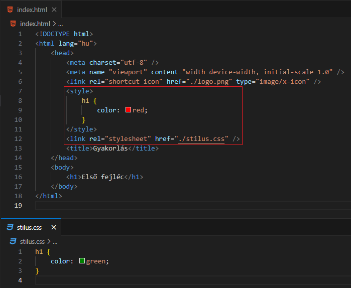
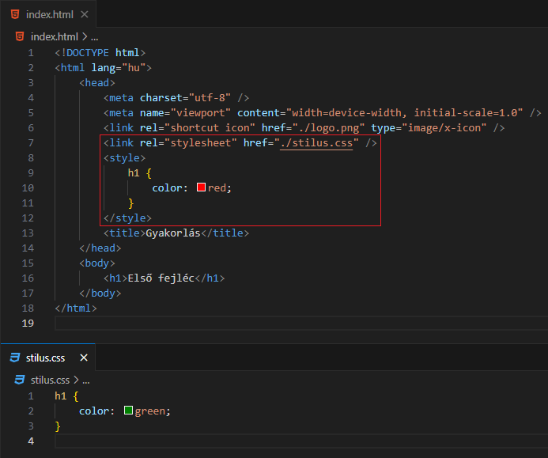
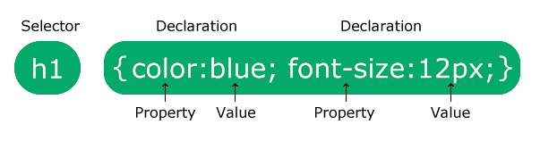
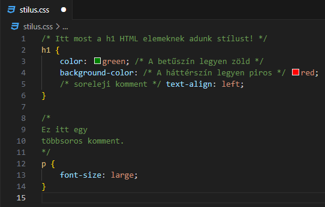

Alapvető dolgok:
-
A CSS a
Lépcsőzetes StílusLapok (Cascading Style Sheets)
rövidítése.
-
Lépcsőzetes (Cascading):
-
A "leszármazott" elemek megöröklik az "ősök"
stílusát.
-
Egy elemre explicit módon megadott stílusok közül az
érvényesül, amelyik a "legközelebb" van hozzá a
kódban.
-
StílusLapok (Style Sheets):
-
Böngészőbeli Alapértelmezett Stílus (Default Style) - Nem explicit módon megadott!
-
Beágyazott Stílus (Inline Style) - Explicit módon megadott!
-
Belső Stíluslap (Internal Stylesheet) - Explicit módon megadott!
-
Külső Stíluslap (External Stylesheet) - Explicit módon megadott!
-
A CSS mondja meg a böngészőnek, hogyan jelenjen meg a
weboldal. Egy stíluslappal több oldalnak is leírhatjuk a
megjelenését!
-
Külső stíluslap (external stylesheet):
-
Egy .css kiterjesztésű
állományban lévő CSS kódok összesége.
-
Erre az állományra a
head elemen belül lévő
<link />
elemben hivatkozhatunk.
-
Egy állománnyal egy teljes weblap (website) stílusát megtudom határozni, ami több weboldalból
(webpage) áll.
-
Belső stíluslap (internal stylesheet): a head elemen belül lévő
<style></style>
elemben található CSS kódok összesége.
-
Beágyazott stílus (inline style): egy meghatározott HTML elem
style attribútumában lévő CSS
kódok összesége.


-
A fenti képeken a következők látszanak.
-
Külső stíluslap :
stilus.css
- Az erre való hivatkozás: 8.sor
- Belső stíluslap: 9-15.sor
-
Beágyazott stílus a
p-elemen 20.sor.
-
És ez, amelyik a "legközelebb" van hozzá, tehát ez
hat rá!
-
Böngészőbeli alapértelmezett stílus a
h1 elemen
Stíluslapok sorrendje:
-
A lépcsőzetesség másik leírása esetén megnézzük melyik
stíluslap van "legközelebb" az elemhez. Ha van
beágyazott stílus, akkor ő a
nyerő. De mi a helyzet a másik kettő sorrendjével. Nézzünk
két példát.
-
Az elsőben a külső stíluslap van
közelebb a h1 elemhez, 12. sor.

-
A másodikban a
belső stíluslap van közelebb a
h1 elemhez, 7-12. sor.

Szintaxis:
- A CSS szabályok szintaxisa a következő.

-
Tehát egy kijelölőből, szelektorból (selector) és egy deklarációs blokkból (declaration block) áll.
-
A kijelölő, szelektor (selector)
rámutat arra a HTML elemre, melynek szeretne stílust adni.
-
A deklarációk (declaration)
"tulajdonság : érték" párok (property : value) pontosvesszővel lezárva. A tulajdonságok CSS
tulajdonságok, az értékek CSS értékek. Ezeket vesszük körbe
egy kapcsos zárójel párral.
Kommentek:
-
-
CSS-ben a komment jelölésére a
/*...*/ címkepár
szolgál.
- Lehet egysoros vagy többsoros.
-
Figyelmeztetéseket és emlékeztetőket helyezhetünk el
a kódban.
-
Bárhol elhelyezhető. Sor elején, sor végén vagy akár
soron belül is. Utóbbi esetén vigyázzunk, hogy
szavakat ne szakítsunk meg vele!

-
Kommentálás segítségével kódsorokat alakíthatunk kommentté.
Ekkor a böngésző figyelmen kívül hagyja azokat, így egyfajta
hibakeresést is tudunk végezni.
Források:
w3schools/css
mdn/css